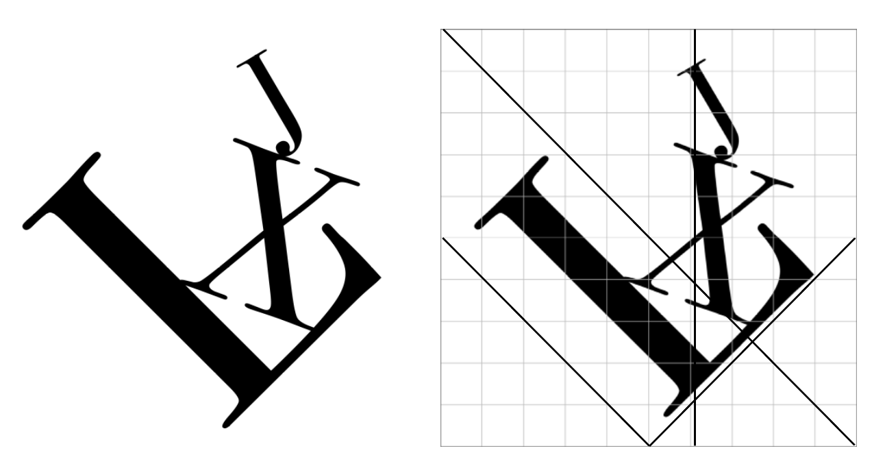

With this subject, students will learn exact technical terms and theories of typography, which has been used since the 15th century in the west. Students must be aware that this subject is a studio class (practical subject). Therefore the core of this class is the project undertaken by the students in class and outside of the course. Students will explore the research for assignments, learning the sense and features of typography. The first assignment is to choose up to one of 8 typefaces and write the initial of your name (ex: KD Hong, KH Park) in A3 paper by hand. The second part of the assignment is to design a Logotype representing your visual identity using the initial of your name. You can use basic elements (dot, circle, quadrangle, rules etc.) within the logotype. The personal Logotype produced in this way will be used as a symbol mark within the next assignment, Stationery Design and as a unit for Stamp Art assignment later on.
 Typeface Choice and Grid SystemBODONI & NAME LOGO
Thinking about myself, I always thought about what I like, I like taking photos. I can always find enjoyment when I look at the world through my lenses. The objects, color, light, and environment all get more attractive to me… Therefore, I drew myself doing my favorite thing — photography, and this I think represented the most of me. Before I decide what type style is my representative typeface, I explored many of others, but Bodoni is one of the typefaces that has the most outstanding looking to my eyes. It is clear, mordern with a rhythm of contrasts. I like typefaces to have some contrasts, for example, dark versus light, thin versus thick, straight versus curved, and etc. It feels like that kind of typefaces are more appealing to me, and contains dynamic energies to convey information. Therefore, I choose Bodoni as my typeface.
 Stamp Posters
Stamp Posters
STAMP NAME LOGO
This assignment is to design a poster with artistic inclination using a simple Logotype stamp. Using a simple form of the stamp can be experimented on A1 paper. This work is to produce an art poster as an emotional design without a grid format.